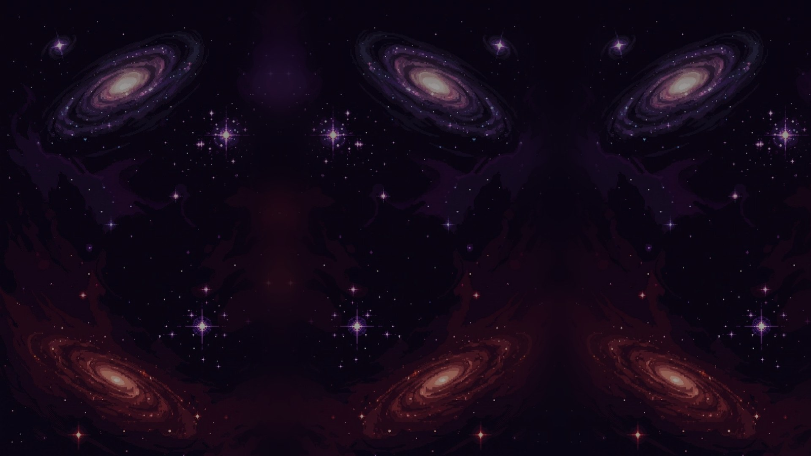

เกมต้องใช้การเร่งความเร็วกราฟิก (WebGL2) ของเบราว์เซอร์ — ตัวเกมไม่ได้เสีย แค่ต้องเปิดค่านี้ก่อน
chrome://settings/system (Edge ใช้ edge://settings/system)
แล้วเปิด “ใช้การเร่งความเร็วกราฟิกเมื่อพร้อมใช้งาน” → ปิดเปิดเบราว์เซอร์ใหม่chrome://gpu บรรทัด WebGL2 ต้องขึ้น Hardware acceleratedchrome://flags ค้นคำว่า ignore-gpu-blocklist ตั้งเป็น Enabled แล้วกด Relaunch
ทดสอบว่าเครื่องรองรับจริงไหม: get.webgl.org/webgl2
(ถ้าหน้านั้นไม่ขึ้นลูกบาศก์หมุน = เบราว์เซอร์ยังปิด WebGL2 อยู่)
เปิดจากลิงก์ในแอป Facebook / Line? ให้กด “เปิดด้วยเบราว์เซอร์” (Chrome / Safari) แทน
แนะนำ Chrome, Edge, Firefox หรือ Safari รุ่นใหม่ บนเครื่องที่มีการ์ดจอไม่เก่ากว่าปี 2012
chrome://settings/system (คัดลอกไปวางในช่องที่อยู่เว็บ)chrome://gpu บรรทัด WebGL2 ต้องขึ้น Hardware acceleratedchrome://flags ค้นคำว่า ignore-gpu-blocklist ตั้ง Enabled แล้วกด Relaunchabout:support หัวข้อ Graphics ต้องขึ้น WebGL 2 Driver Renderer เป็นชื่อการ์ดจอจริงC:\Program Files\Google\Chrome\Application\chrome.exe
การ์ด NVIDIA ตั้งซ้ำอีกชั้นได้: คลิกขวาหน้าจอ > NVIDIA Control Panel > จัดการการตั้งค่า 3D > การตั้งค่าโปรแกรม > เลือกเบราว์เซอร์ > โปรเซสเซอร์กราฟิก = ตัวประมวลผล NVIDIA ประสิทธิภาพสูง
ที่อยู่ไฟล์เบราว์เซอร์อื่น ถ้าหาไม่เจอ —
Edge: C:\Program Files (x86)\Microsoft\Edge\Application\msedge.exe ·
Chrome: C:\Program Files\Google\Chrome\Application\chrome.exe ·
Firefox: C:\Program Files\Mozilla Firefox\firefox.exe
ทำไมเกมสั่งให้เองไม่ได้: หน้าเว็บขอได้แค่ “ขอการ์ดจอตัวแรง” ซึ่งเกมขอไปให้แล้วทุกครั้ง
แต่ Chrome/Edge บน Windows ผูกการ์ดจอไว้ทั้งเบราว์เซอร์ตั้งแต่เปิดโปรแกรม
(Opera, Brave และ Chromium ตัวอื่นก็ตัวเดียวกันหมด) จึงไม่สลับตามคำขอของหน้าเว็บ
— สวิตช์จริงอยู่ที่ Windows เท่านั้น (Firefox กับ Mac สลับตามคำขอให้เอง)
เล่นต่อได้เลยถ้าไม่สะดวกตั้งตอนนี้ แต่ถ้าแลคมาก ลองลดที่ ตั้งค่า > กราฟิก > คุณภาพกราฟิก เป็น “ต่ำ” ช่วยได้อีกทาง